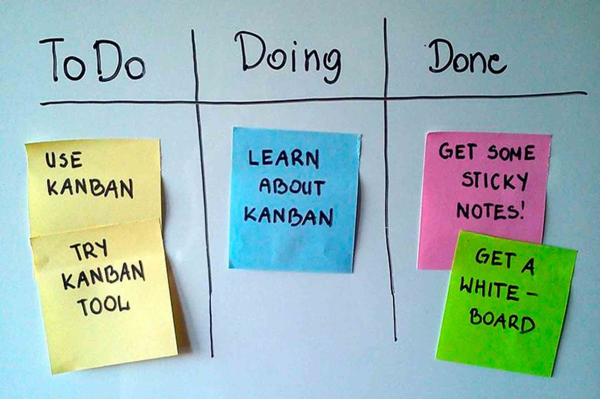
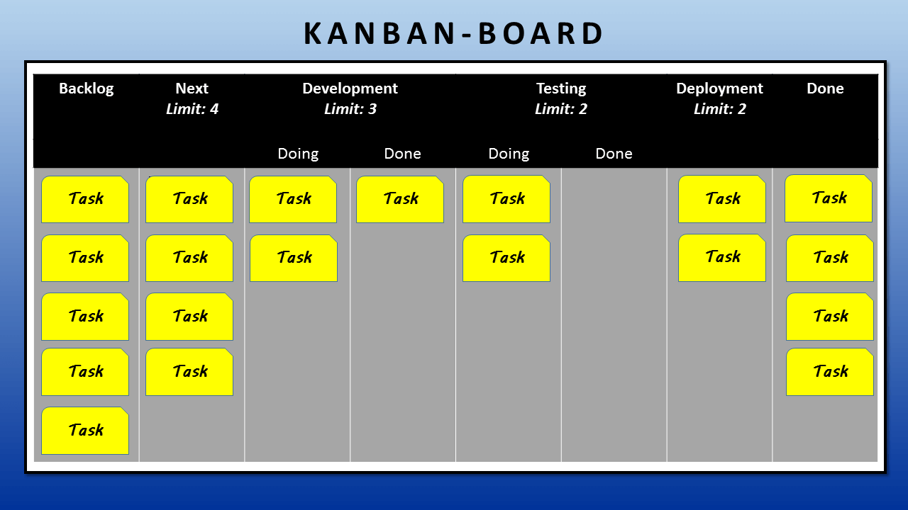

"La metodología Kanban es un enfoque que se apoya en un sistema visual para gestionar tareas de forma eficiente y productiva a medida que avanzan en el proceso. Su origen se remonta a finales de la década de 1940, cuando el ingeniero japonés Taiichi Ohno lo desarrolló en Toyota para optimizar la fabricación de automóviles. En su creación se utilizaban tarjetas para señalizar los procesos y las materias primas. De ahí el nombre de “kanban”, que en japonés significa “registro visual” o “tarjeta”. Posteriormente, esta metodología se expandió a otras áreas y procesos de trabajo debido a su eficiencia para dar seguimiento a sistemas de producción. En el año 2004, David Anderson fue el primero en aplicar Kanban al área de tecnologías de la información y desarrollo de software.  El núcleo de Kanban radica en el uso de tableros Kanban, donde cada columna representa una etapa del trabajo, como "Trabajo pendiente", "En proceso" y "Terminado". Aunque esta es la forma más básica, es posible adaptar y personalizar las etapas según las necesidades del equipo y la tarea en cuestión.
Objetivo principal: El objetivo principal de la metodología Kanban es visualizar el flujo de trabajo de manera organizada, lo que permite a los equipos tener una visión clara del progreso y las tareas en curso. Al establecer límites de trabajo en progreso (WIP), se evita la sobrecarga y se fomenta la concentración en la finalización de tareas antes de agregar nuevas. Esto optimiza la eficiencia y la calidad del producto o servicio final, al tiempo que reduce el tiempo de ciclo y mejora la entrega continua. Además, al visualizar el proceso, Kanban facilita la identificación temprana de posibles fallas o retrasos, permitiendo una gestión más proactiva.
1- Visualización: Algo característico de Kanban es que es completamente visual. La visualización del flujo de trabajo en un tablero permite entender perfectamente en qué momento de desarrollo se encuentra el proyecto y acceder a las tareas en cualquier momento para hacer las modificaciones necesarias.
1- Priorización: Otro principio clave es la priorización. Las tareas pendientes deben colocarse en un orden coherente que facilite el trabajo del equipo. Esto ayuda a mantener el enfoque en las tareas más importantes y a optimizar el flujo de trabajo.
2- Liderazgo en todos los niveles: el tercer principio enseña que el liderazgo está en todos los niveles, porque se necesita la implicación de TODOS los miembros del equipo, no solo de los managers. El liderazgo y el compromiso de cada individuo son muy necesarios para lograr el éxito del proceso.
3- Mejora continua: otro punto clave, es la mejora continua, la cual fomenta la cultura del aprendizaje y adaptación ya que a medida que identificamos oportunidades de mejora, implementamos cambios en el proceso para optimizar el flujo y así trabajar mejor.
4- Calidad garantizada: lo cual esto también llega al último principio que es la calidad garantizada ya que Kanban prioriza mucho la calidad, antes que la rapidez. Esto asegura que no haya margen de error y que el trabajo entregado cumpla con los estándares más altos.
Escencialmente el elemento central y clave del modelo Kanban es su tablero - donde visualizamos abiertamente las tareas de todxs lxs miebros del equipo al unísono. Las tareas se marcan con Notas y se colocan en relación al estado de las mismas en el tablero. Al tablero en sí se le divide en un número x de columnas (Tres como mínimo), en donde la metodología será ir moviendo de izquierda a derecha las tareas hasta llegar al extremo del tablero dando a entender al equipo que la tarea en cuestión está finalizada.
Sobre la Izquierda se encuentran las Tareas «pendientes» (backlog).
Sobre el centro la/s tarea/s actualmente «en curso» (Work in Progress - WiP).
Sobre las derecha las tareas «completas» (Done).
Dada la jeraquía de algunas tareas por sobre otras en los proyectos, podemos dar prioridad en un tablero Kanban utilizando los denominados "carriles" ("swimmlanes" en Inglés). Estos carriles son filas horizontales (imaginarias o marcadas; da igual) que subdividen a la columna donde se colocan las tareas «en curso».
El equipo puede situar en la parte superior todo el trabajo que debe realizarse con más urgencia y - por debajo escalonadamente - aquellas tareas que no son tan prioritarias; consiguiendo de esa manera que todos lxs miembros del grupo tengan una visión general de las tareas urgentes.
Kanban ayuda a encontrar un equilibrio entre la demanda de trabajo y la disponibilidad del equipo. Su principal ventaja es que maximiza los beneficios de un proyecto. Entre ellos:
1- Al ser un método visual ayuda a poner en marcha el trabajo y tener una visión clara de los flujos de trabajo de tu equipo.
2- Al centralizar las tareas, aumenta la claridad y ayuda a obtener información de las tareas realizadas por tus compañeros, permitiendo así el trabajo colaborativo en tiempo real.
3- Al reducir la cantidad de trabajo en progreso, permite aumentar la productividad y reducir el tiempo de entrega.
4- Kanban se basa en un proceso de mejora continua, por lo tanto, fomenta la flexibilidad y el dinamismo del equipo, formando un equipo ágil y con gran adaptación al cambio.
5- Por útlimo, ayuda a tener prevención ante posibles fallas. Permitiendo la agilidad y organización.
Para recapitular todo lo dado, vamos a exponer un ejemplo practico de como usar el metodo kanban para el desarrollo de un pagina web.
1- Primero seria la creacion del tablero kanban, tenemos varias herramientas digitales que nos permiten realizarlo, alli creamos las siguientes columnas: "por hacer", "en proceso", "pruebas y revision" y "completado"
2- Luego se asignan y dividen las tareas en sus respectivas tarjetas, y se colocan en la columna de "por hacer".
3- Durante las reuniones del grupo se revisa el tablero y se decide que tareas se mueven a la columna de "en proceso". Es importante que el grupo ponga un numero limite de tarjetas para esta seccion, asi evitamos la sobrecarga de trabajo y nos enfocamos en finalizar correctamente cada tarea.
4- Cada vez que se finaliza una tarea, se mueve a la columna de "prueba y revision", donde se realizan las pruebas necesarias y la revision final del codigo para asegurarse de que todo funcione correctamente y optimizar lo mejor posible la pagina.
5- Por ultimo cuando todas las tarjetas pasan de la columna de "pruebas y revision" a la de "completado", la pagina web ya estaria pronta y lista para ser publicada.